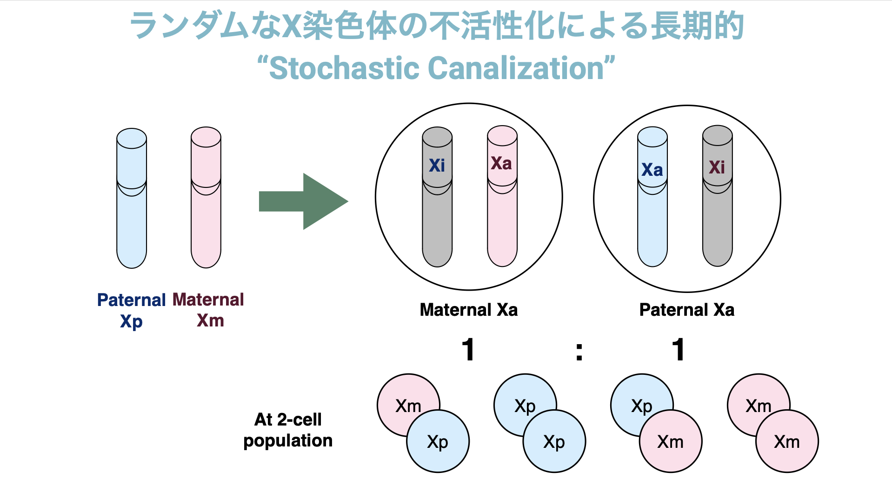

Essay
2023.12.21
一卵性四つ子のアルマジロの転写パターンに残る発達過程の確率的ノイズの検出
- The transcriptional legacy of developmental stochasticity.” Ballouz S†, Kawaguchi RK†, Pena MT, Fischer S, Crow M, French L, Knight FM, Adams LB, Gillis J. Nature Communications, 14, 7226, 2023. [link] [bioRxiv]
Created by Kazuki Mizawa @CiRA
11月に前所属であるCSHLで取り組んでいた仕事がPublishされました。この論文では、ココノオビアルマジロというかなり珍しい実験動物を対象として、「細胞運命の確率的運河化」という面白いアイディアの検出を目指しました。 論文中の画像については、CC-by 5.0で上記リンクより取得しています。
背景
私が当時所属していたCold Spring Harbor研究所のGillis研究室では、Non-model organism day（非モデル生物の日）と称して、様々な珍しい生物の特性とそれを活かした研究の可能性を議論する日がありました。確かゲノムサイズがとても大きいネズミとか、カブトガニの話とかをしていたような気がします。そんな中、共同第一著者のSaraがココノオビアルマジロに着目するようになったのは、こういったイベントを通してでした。
ココノオビアルマジロは異節類に属しており、ナマケモノやアリクイに近い哺乳類の仲間です。ヒトと同じく胎盤を持ち、メスではXX、オスではXYの染色体のパターンを示し、メスは子供を母乳で育てます（参考：基本的な生態)。そして、このココノオビアルマジロ（を含む同じDasypusに属するアルマジロ）が持つとてもユニークな特性が、一卵性の兄弟を生む多胎化（Polyembryony）です。特に、ココノオビアルマジロは一卵性の四つ子を産むことが知られており、実際の赤ちゃんの兄弟の写真と論文の紹介レビューをここから見ることができますが、メス四匹もしくはオス四匹の兄弟になります。
このような一卵性の兄弟を調べることで、果たしてどんなことがわかるでしょうか？ 一卵性の双子の場合、同じ生殖細胞から（一部新規に体細胞変異が挿入されることを除けば）基本的にほぼ同一の遺伝情報が引き継がれますが、二卵性の双子では別々の組み換えパターンを獲得した遺伝情報が伝わるため、同時に生まれてくる兄弟とも言われます。そこで、こういった一卵性の双子・二卵性の双子、そして兄弟間で同一家庭や離れて暮らす個人間を比較することで、様々な形質や疾患の発生などが、どの程度遺伝要因や環境要因に依存するかを調べることに利用されてきました（参考：日本の双生児研究）。こういった研究により、ガンや老化、自己免疫疾患など様々な形質や疾患の発生が、その２つの要因だけでは説明できない可能性があると示唆されています (Castillo-Fernandez JE, et al. 2014.)。
ここで挙げられる遺伝・環境要因以外で形質の決定に関わる要素としては、例えばヒトでは一卵性双生児であっても体細胞変異 (Jonsson H, et al. Nat Genet, 2021.)や胎内環境の違い (Marceau K, et al. Behaviour Genetics, 2016) が存在することなどがわかっていますが、今回我々のグループがアルマジロモデルを使って着目したのは、確率的な変動、いわゆるノイズというものの影響です。 確率的な変動によって細胞・個体の運命決定がされる、確率的カナリゼーション＝運河化という現象を、アルマジロというヒトに近い哺乳類において検証することで、遺伝・環境以外の要因が様々な形質の多様性に及ぼす影響について検証していきます。
X染色体の不活性化
哺乳類のメスでは、両親から受け継がれたX染色体の一本が不活性化する、XCI（X chromosome inactivation）というメカニズムが存在します。これは、雌雄の遺伝子発現量を均一にする遺伝子量補償と深く関わるメカニズムです。こういったメカニズムには、非コードRNAであるXist遺伝子の発現が重要であることがわかっており、近年はSHARP/SPENなどのタンパク質との関連によるダイナミックな染色体の制御が起きていることが示唆されていますが (Jachowicz JW, et al. Nat Struct & Mol Biol, 2022)、不活性化のタイミングや時系列的な制御などその全貌は未だ明らかになっていません。
さて、この不活性化において染色体が選ばれるメカニズムは、一部の哺乳類を除けば基本的にランダムであるため、対立遺伝子の発現量比は1:1になることが知られています。よってX染色体上の遺伝子のアレル特異的発現を測ると、その値は0.5を平均とする分布に従います。XCIが終結するタイミングは細胞が複数存在する着床前後であると言われ、細胞数が少ないとこの平均のばらつきは大きく（2細胞の場合は以下図参照）、細胞数が多いと平均のばらつきは小さくなりやすいと考えられます。一度不活性化された染色体のパターンは子孫となる細胞にもエピジェネティックな制御を介して引き継がれるため、元となる細胞数に応じたばらつきをもって分布することが予想されます。

そこで我々は、このX染色体の不活性化のパターンが（特定の細胞の系統が急激に増えるといったような）偏りなく成熟個体の血球細胞へ引き継がれ、かつバルク解析では十分な細胞数がサンプリングされていると仮定することで、X染色体の不活性化が起きたタイミングを推定することを試みました。 不活性化される染色体の選択が1:1で起きるとすれば、観測される不活性化の偏りは平均が0.5の二項分布で近似することができます（Fig.1F）。そして、不活性化が終結したタイミングで何個の細胞が独立に不活性化を引き起こしたかを、二項分布における試行回数nと対応させることで、もっともらしいnを探すことにしました。
アルマジロのトランスクリプトーム解析におけるチーム体制
私達は以上のような目標のもと、数年に渡ってサンプルされたアルマジロの遺伝子発現情報を解析することで、同じ環境下で育てられた遺伝的に同一な四つ子であっても個体独自のアイデンティティともいうべき、独自の発現パターンを持っているかを検証することにしました。
アルマジロの育成とサンプルの収集は、ルイジアナに位置する国立ハンセン病プログラム（NHDP）とアーカンソー州オザーク大学（←実際の育成ファシリティの場所）に所属する共同研究者らによって行われ、CSHLとNew York Genome Centreのシーケンスコアによって送られてきたサンプルのRNAとDNAのシーケンシングが行われました。その後Saraの主導により得られたハプロタイプ情報をもとに、アレル特異的発現の定量化と遺伝子機能解析、個体予測プログラムのデザインが行われています。
プレプリントを見ていただけるとわかるかと思いますが、私がこのプロジェクトに参加したのは既にサンプルが収集されたあとで、データ解析を引き継ぎ、主に数理シミュレーションによる解析を担当しています。二項分布によるアレル特異的発現のモデル化や、確率的運河化により引き起こされるハプロ不全を説明するためのモデル設計・シミュレーションを実施し、アルマジロで実際に観測されたアレル不均衡とそのばらつきが、形質や疾患の発生にどのような影響を及ぼすか議論を行いました。 つまり、私自身は未だにココノオビアルマジロを生で見たことがありません…！ 機会があればテキサスに見に行きたいと思っています（最近は温暖化で南部からニューヨークまで進出してきているそうですが）。
アルマジロのトランスクリプトームに見られたアレル特異的発現の多様性
実際に、我々がメスの兄弟においてSNP（一塩基多型）を利用して観測された不活性化の偏りとシミュレーション結果を比較してみると、約25細胞のタイミングで不活性化が起きたときに生み出される分散と最も近いことがわかりました（Fig. 2B）。リファレンスバイアスなどの影響を考慮しても、推定された細胞集団は10-100程度になります。アルマジロにおける胚の細胞数に関する大規模なサーベイ研究は残念ながらありませんが、例えばマウスでは内部細胞塊（Inner Cell Mass）からエピブラストに至る際の細胞数は12-600前後（E6.5）との報告がなされています。またアルマジロのTwinningの観察では、ブラストシストが着床後4つに分裂する様子が見られており、推定されたタイミングと比較してX染色体の不活性化はその段階ですでに終結していると考えられます。しかし、実際には個体間ではより大きな不活性化のばらつきの運河化が見られたことから、分裂前に既に少ない細胞集団によって、四つ子独自の系統が形成されている可能性が示唆されています。
今回の結果は、例えば特定の細胞の系統が今回対象とした血球細胞に多く含まれていた場合などには、母集団の細胞数の過小評価となる可能性もあり、conservative=保守的な推定値であると言えます。ともあれ、我々は成熟した個体を利用して、世代を超えて細胞間で受け継がれるエピゲノム状態のシグナルの解析から、発生の初期段階において「確率的に生み出されたばらつき」の影響を検出することができた、と考えられます。
また、数は少なくはありましたが、常染色体上においても数年に渡って保存されたアレル不均衡パターンが検出された領域が存在していました。X染色体の不活性化とは異なるメカニズムとは考えられますが、何らかのエピジェネティックな制御が、長期に渡って特定の個体のみにアレル特異的発現のゆらぎを引き起こしている可能性が、我々の解析結果からは示唆されています。
おわりに ― アレル特異的発現が及ぼす様々な影響
このように、同じ遺伝的配列を持っていても確率的に対立遺伝子の発現がばらつく現象は、不完全なハプロ不全の疾患などと深く関連している可能性があります。例えば、神経に関連するウィリアムズ症候群や造血に関連するモノマック症候群など、片方の染色体が変異などにより機能を失うことで発症する、様々なハプロ不全の疾患が知られています。しかし、疾患によっては同じ有害な変異を持つキャリアであっても、発症するケースとしないケースが確率的に存在する場合などが知られています。
我々の研究で示された確率的なアレル不均衡の運河化は、例え遺伝・環境要因が同じだったとしても、発達の初期段階のゆらぎによって、最終的に大きな形質の違いを生み出す可能性を示唆しています。またX染色体の不活性化のばらつきに限っていえば、女性に多いと言われる様々な自己免疫疾患の中にも、このような確率的なばらつきに起因するものがあるのではないかと考えられています。
さらにiPS細胞においても、不活性化されたX染色体が侵食され不安定化するErosionと呼ばれる問題や、発生段階モデル構築のための正常な再活性化・再不活性化を制御する技術が求められており、X染色体の不活性化のメカニズムは大きな注目を集めています。当研究室でも現在、iPS細胞における確率的な発現ゆらぎに注目して、初期化メカニズムの理解のための様々な研究を進めているところです。